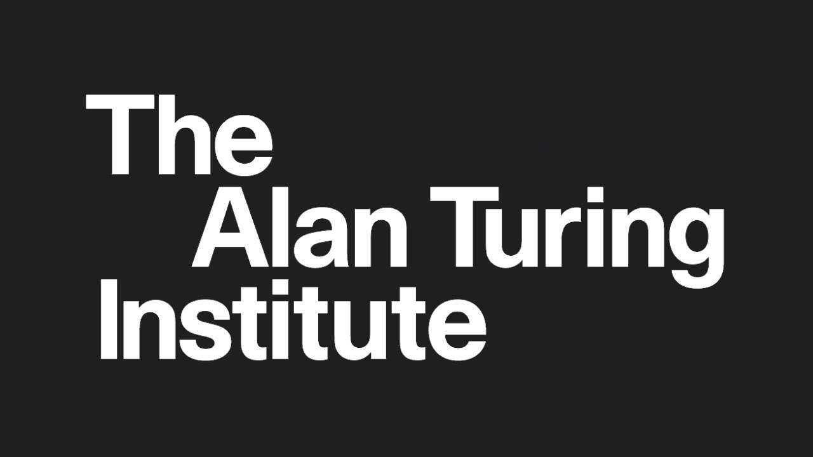

"Science is a differential equation. Religion is a boundary condition."
Timeline of Alan Turing
- 1912 - Alan Mathison Turing born in Maida Vale, London, to Ethel Sara Turing (nee Stoney) and Julius Mathison Turing.
- 1927-30 - Alan furthers his love of science and maths by reading Einstein whilst at Sherborne. His great friend, Christopher Morcom, who shares his interests, suddenly dies. Alan is devastated.
- 1934 - Alan graduates with distinction in Mathematics from King's College, Cambridge.
- 1938 - Alan goes to Princeton University in America to study mathematics and is awarded a PhD.
- 1939 - September - Alan is asked to join the Government Codes and Ciphers School and arrives at Bletchley Park the day after war is declared.
- 1940 - With Gordon Welchman, Alan develops the Bombe to decipher the messages sent by the Germans using their Enigma machine.
- 1943-45 - Alan works with top people in the USA, which he visits to share information on code breaking.
- 1945 - At the end of the war, Alan Turing is awarded the OBE for his wartime services.
- 1946 - Alan publishes a paper with the first detailed design of a stored-program computer.
- 1949 - Alan is made deputy director of the Computing Laboratory at Manchester University.
- 1950 - Alan publishes the famous paper 'Computing Machinery and Intelligence' in which he develops the Turing Test.
- 1951 - Alan is elected Fellow of the Royal Society, and also gives talks about Artificial Intelligence on the BBC.
- 1952 - Alan is arrested for gross indecency. He loses his security clearance so he cannot work. He is offered chemical treatment instead of going to prison. The treatment makes him very unwell.
- 1954 - Alan dies in his home in Wilmslow, Cheshire, from poisoning. A half-eaten apple was found next to him laced with cyanide.
- 1986 - A play, Breaking the Code, about Alan's life and work opens in the West End with Derek Jacobi playing Alan.
- 2007 - A slate sculpture of Alan Turing is unveiled at Bletchley Park.
- 2009 - Thousands of people sign a petition. The Prime Minister, Gordon Brown makes a public apology saying the treatment of Alan Turing was "appalling".

In 2015 a new national centre for research in data science and AI, The Alan Turing Institute, was created in Alan Turing's name.